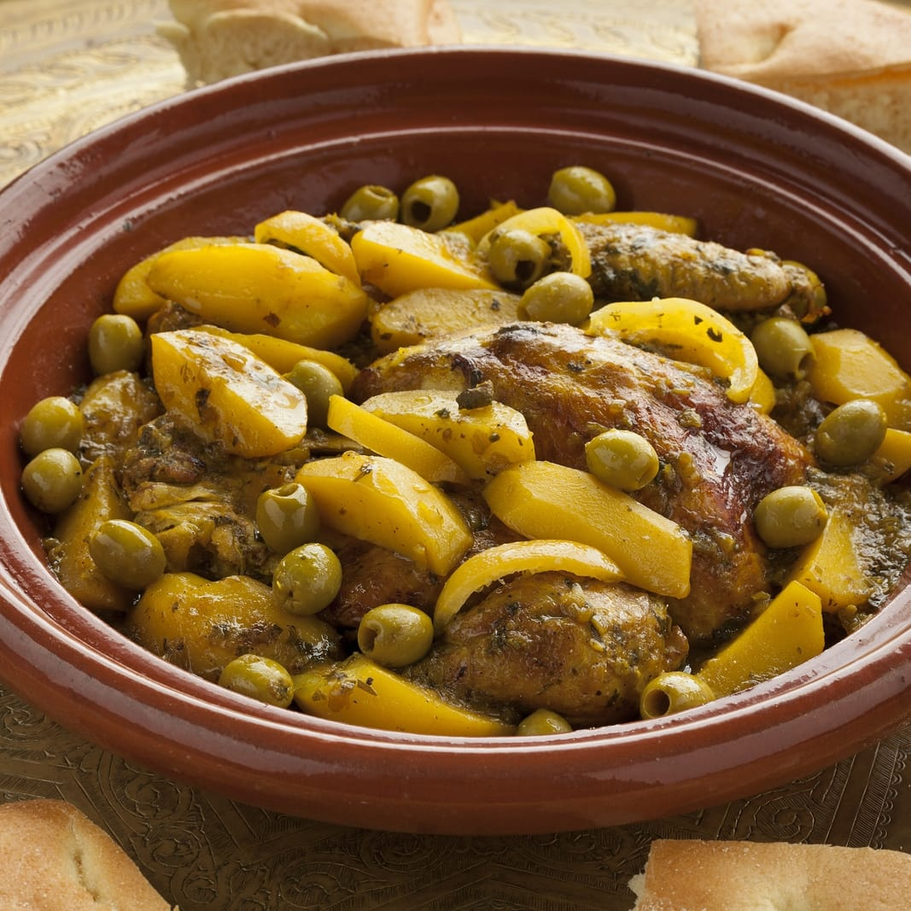

Moroccan Chicken Tagine

Description
Moroccan Chicken Tagine is a savory and aromatic dish featuring tender chicken slow-cooked with potatoes, olives, and a blend of spices like cumin, coriander, and saffron, creating a rich, flavorful stew. The dish is traditionally served with couscous or bread, offering a comforting and authentic taste of Moroccan cuisine.
Ingredients
- Chicken pieces (thighs or drumsticks)
- Potatoes, peeled and cut into chunks
- Green and/or black olives
- Onions, sliced
- Salt and pepper (to taste)
- Garlic, minced
- Fresh cilantro and parsley, chopped
- Olive oil
- Chicken broth or water
- Lemon (for zest and juice)
- Spices: cumin, coriander, paprika, turmeric, ginger, saffron, salt, and pepper
Steps
- Rub chicken pieces with cumin, coriander, paprika, turmeric, ginger, saffron, salt, and pepper.
- Brown the chicken in olive oil, then set aside.
- Sauté sliced onions and minced garlic in the same pot until soft.
- Add potato chunks, browned chicken, and enough chicken broth or water to partially submerge the chicken.
- Add chopped cilantro and parsley. Simmer covered for 45-60 minutes until chicken and potatoes are tender.
- Add olives, lemon zest, and juice. Cook for 10 more minutes.
- Garnish with fresh cilantro and parsley. Serve hot with couscous or bread.